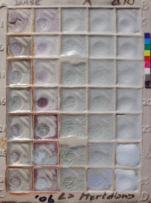
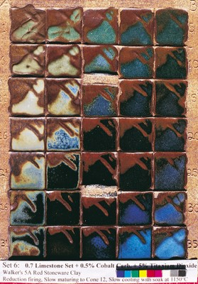
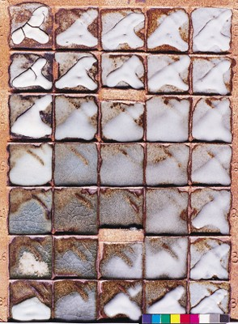

Glaze Principles - Varying Alumina and Silica - 2
Examining some of the effects of varying alumina and silica, using fired grid tiles to illustrate.
Some effects of Alumina and Silica
Melting Point
Alumina and silica both have very
high melting points, and in most cases increasing alumina and/or silica
will raise the melting point of the glaze. [For the exception to this
principle, see the segment later on Eutectic.] So the usual case is
for the glazes to start melting at or near Corner C and with further
maturing the melt zone spreads diagonally towards corner B, and more
slowly towards Corners A and D.
Crazing
We can study the grid tile for the occurrence and nature of crazing in each of the 35 glazes. For a complete view of the crazing on a grid tile it is necessary to use a hand lens magnifier. This is particularly the case with dark glazes and some opaque glazes. The cells on the grid tile are usually about 25 mm (1 inch) square. A glaze that shows no crazing on a particular cell may nevertheless craze when applied to a pot if the craze lines are spaced more widely than 25 mm.
The general pattern that will be seen on the grid tile is that crazing is maximum in the C corner, the corner that is highest in fluxes. Moving away from C, the crazing decreases. With high temperature glazes both alumina and silica can reduce crazing, while at lower temperatures it seems that silica is more effective. Whatever the case, a fired grid tile shows the specifics for the set. Bear in mind these specifics apply just to the clay used and the firing used. Changing these can result in more or less crazing. Changing the clay body is often the best way to adjust crazing in a glaze.
Glaze surface: matt, shiny etc.

Once the grid tile is fired high enough, many will show a pattern similar to the image here. In the C corner, which is high in fluxes, the glazes are often runny, crazed, shiny, with or without crystals. In the A corner, which is high in alumina and low in silica, in mid-fire and high-fire there will be alumina matt glazes, sometimes becoming dry matt glazes or simply underfired as we get to A. In the D corner which is high in silica, there will sometimes be opaque glazes, sometimes opalescent glazes as we move towards C. Glaze D itself is often underfired. If the tile is fired high enough there will often be a band of transparent shiny glazes extending diagonally across the tile from C to B.
Opacity
Crystals in a glaze result in opacity. A matt surface will make the glaze at least semi-opaque, if not completely opaque. One or more of the high silica glazes will often show opaque glazes that are quite shiny. We can also add an opacifier to the glaze, but just now we are considering the effects of varying alumina and silica.
Opalescence
Between the high silica opaque and the transparent shiny glazes is
where the opalescence will occur, if it does. It is a transition form
between opaque and transparent. Glaze 34 in the tile here (on the
left of D) shows this opalescence.
Crystal formation
Work in Progress
Volatilisation of fluxes
Some fluxes are more volatile than others and this can be seen especially around corner C, the corner with the maximum flux content. In the image below the rusty colour on the bare clay around the glazes in corner C is clearly evident. In this case it extends almost up to glaze A, but is not evident on the right-hand edge of the tile. It can also be clearly seen in the tile above called BQ1. For this rusty colour to be evident, the clay should contain some iron. It doesn't need much, but if there is no iron present in the clay, like in a very pure porcelain, then the rust colour does not appear. In this case the volatilization is evident by a sheen on the clay surface. Some of the fluxes that are especially volatile are lithium carbonate, barium carbonate, most frits, high soda flux materials.

Solubility of some fluxes
Work in Progress
Colour Response
Colourants give a wide range of colours depending on the nature of the base glaze, and also the clay body and firing.
If
the colourant dissolves into the glaze, the colour response is
relatively consistent, resulting in transparent coloured glazes. If
crystals form, the possibilities are much wider. The growth of
crystals in a coloured glaze will nearly always change the colour,
sometimes in a way that is dramatically different from the glaze where
there are no crystals. The crystals may be so small as to give a matt
glaze, or large as in a zinc crystal glaze.
The colour break phenomenon will give different colours depending on thickness. This is discussed in the following item.
The
addition of commercial colourants to glazes will usually result in
opaque relatively stable colour. The colour is opaque because
commercial colourants are usually very stable and do not dissolve into
the glaze, but form a microscopic suspension of (opacifying) colourant
particles within the glaze.
These are just a few examples, but
whatever the case, the grid tile shows the full range of possible
colours with a chosen colourant, within the range of body and firing
conditions used. In the grid tile below, all the glazes have the same
percentage of colourant. The observed colour change is an illustration
of how colour response can be dramatically effected by variations in
alumina and silica. (Alumina increases up the tile, and silica
increases from left to right.)
Colour Response - Changes from Varying Alumina and Silica:

The set here is the same as the 0.7 Limestone Set shown earlier (and in the next image) but with the addition of 0.5% cobalt carbonate plus 5% titanium dioxide to each glaze. These two additives are giving the dramatic colour response across the tile. Another factor is that this tile is made of a dark clay which affects the glaze especially where it is thin. This can be seen in the glazes around the A corner (top left).
Colour break
Work in Progress
Compensating Variables
If we want specific effects like for example a tenmoku, or a chun, or a shino... it's not just one recipe that will give one specific glaze. They all occur over a wide range of recipes, and the firing and clay body also play a vital role. If we have one of these glazes that works well with a particular recipe on a particular body in a particular firing, we may lose the effect if we change one thing. However if we change not one thing but two or three variables, it is possible to maintain the effect. The different variables are compensating to keep the glaze the same. We can call this phenomenon "compensating variables". I'll show a couple of examples....
Example 1 - Increasing Alumina and Silica to Compensate for Higher Firing
This is what I call the Standard Limestone Set. All the glazes have
feldspar and whiting in the ratio of 7 to 3. Alumina increases up the
tile and silica increases left to right across the tile. The glaze in
the middle of the set, glaze 18, is a shiny almost transparent glaze at
cone 10. If I fire higher, it becomes more shiny, but if I raise both
the alumina and silica content in the correct proportion (moving up and
to the right) I can get almost exactly the same glaze effect at the
higher temperature. So glaze 14 now looks like 18 used to. Although
we have changed one vital variable (in this case maturing temperature)
we can get the same appearance by changing two other compensating
variables (alumina and silica).
One reason the grid method is so
successful is that alumina and silica are two of the most important and
widely effective compensating variables, and in every grid we are
varying these two over the widest possible range.
Example 2 - Producing a Tenmoku Glaze without any Iron Oxide in the Glaze Recipe - Using the clay body to compensate.
The tenmoku glaze is a traditional Chinese stoneware glaze that is black where thick and breaks to rust colour where thin on the rim, and over raised texture. It usually requires about 6 to 8% of iron oxide to get this effect. In the tile here there are a number of tenmoku glazes, in the middle square and beside and below it, and there is no iron oxide at all in the glaze recipe. (The colourants are cobalt carbonate and titanium dioxide.) There is obviously iron there, but it comes from the clay body, and has migrated to the glaze by virtue of a high long firing in reduction. So here a particular clay body and firing combination is compensating for a lack of iron in the glaze recipe.
 Previous: Glaze Principles - Varying Alumina and Silica
Previous: Glaze Principles - Varying Alumina and Silica